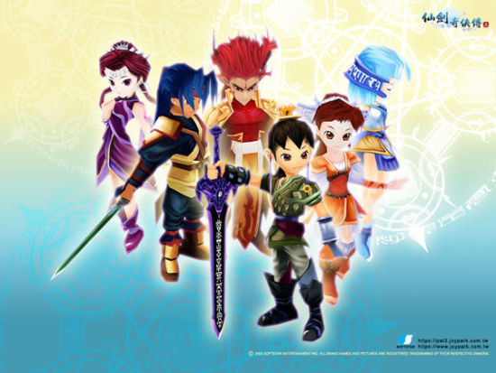

|
|
|
《仙剑奇侠传三》是国产单机角色扮演游戏《仙剑奇侠传》系列的第三代作品，由大宇资讯股份有限公司旗下的软星科技（上海）有限公司研发，于2003年暑期发行。从本代作品开始，《仙剑》系列开始建立“六界”世界观；3D画面在系列中首度出现；战斗模式等方面也得到大幅度的改变。凭着绚丽活泼的浓情风格，本作又为仙剑系列赢取了一大批的新晋玩家，被评为2003年最出色的RPG之一，后于2008年被改编成同名电视剧。
《仙剑奇侠传三》故事发生在《仙剑》第一代的五十年前，那时候，李三思刚刚发出赤子的第一声啼哭；巫后还是襁褓中的婴儿，而剑圣，则还没有拜入蜀山修仙
事情的起因是从锁妖塔顶端突然坍塌，封印被解除开始的，但是，更深层的因果却要追溯到千年前的神界。
神将军飞蓬与魔尊重楼因两界的冲突而屡屡交手，一直难分胜负，两人逐渐有惺惺相惜之意。
重楼提出要和飞蓬在自己发现的一处新仙界中决斗，一较高下，飞蓬碍于神界天规而犹豫再三，最终经不起重楼诱惑而答允。
两人势均力敌，比试旷日持久，最终惊动了天庭，天帝派兵捉拿飞蓬问罪，飞蓬因感知到追兵将至而分心，佩剑被重楼打落人间而落败。
光阴荏苒，飞蓬被神界问罪贬为人，经过多次转世成为渝州唐门永安当铺伙计景天。
景天得到魔剑的同时，结识了唐门小姐雪见，从此改变了自己的生活。
一开始被卷入雪见家族的内部斗争以及唐门和霹雳堂的争斗之中，而后遇到蜀山弃徒长卿及其未婚妻紫萱，景天走上了协助蜀山寻找五灵珠，封印锁妖塔的漫漫征途。
一直隐藏在魔剑中的鬼魂化身而出，竟然是景天前世龙阳的妹妹龙葵。
几个人的情爱纠葛，生离死别反复交织纠缠，雪见的离奇身世，紫萱不为人知的秘密，龙葵长久以来的心中愿望。伴随着人类与妖界死生存亡的争斗，而其实人的欲望，才是所有纷争的本源
《仙剑奇侠传三》是由根据RPG游戏改编的同名电视剧，由李国立执导，胡歌、霍建华、杨幂、刘诗诗、唐嫣、黄志玮领衔主演，共37集，2010年1月1日作为开年大戏在江苏卫视首轮上星。该剧讲述了渝州城永安当的小伙计景天和唐门大小姐雪见受到两人随身玉佩的彼此吸引，他们二人“热闹而又尴尬”的相识了，成了一对欢喜冤家，其实雪见和景天正是彼此的有缘人，而他们都来历不凡，身藏几世的秘密，随着雪见家族的剧变，二人阴差阳错的步入了江湖的血雨腥风之中，并结识了徐长卿、龙葵和紫萱等，等待他们的是更加惊险的前程和重大的责任。
http://www.douxie.com/game/2622.html